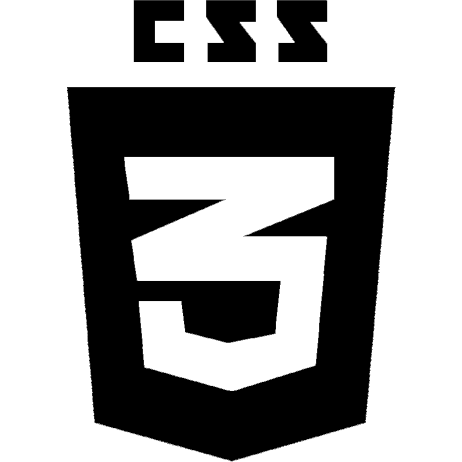

Datos personales
Datos personales
Facundo Elias Lopez 16 de noviembre de 1999
Soltero
Argentino
Habilidades
CSS
Contacto
 +54 1135846270
+54 1135846270  facueliaslopez@gmail.com
facueliaslopez@gmail.com  Lanús Este, Buenos Aires
Lanús Este, Buenos Aires  Información
Información
Un gusto poder saludarlos y ponerme en contacto con ustedes. A continuación, les adjunto a detalle mis estudios, actualmente no poseo experiencia laboral. Soy una persona muy calma y tranquila, ideal para la atención al cliente o la resolución de problemas que se plantean al momento. Poseo un buen manejo de responsabilidad a la hora de ejercer, tengo conocimientos avanzados sobre tecnología en general y un excelente uso de computadoras y algún que otro programa, ya sea Word, Excel, entre otras. Tengo conocimientos de programación en diferentes lenguajes y, además, actualmente me encuentro en el 2do año de la carrera de Lic. En Sistemas que se da en la Universidad Nacional de Lanús. He concluido mis estudios primarios y secundarios en el Instituto privado “Mi Casa”, o también conocido como “Nere-Echea”.
 Estudios
Estudios

Instituto Nere echea (2003-2017)
Secundaria y Primaria con orientación a ciéncias sociales.
Universidad Nacional de Lanús (2019-actualidad)
Licenciatura en Sistemas
 Cursos
Cursos

Codo a Codo
FullStack Java Developer